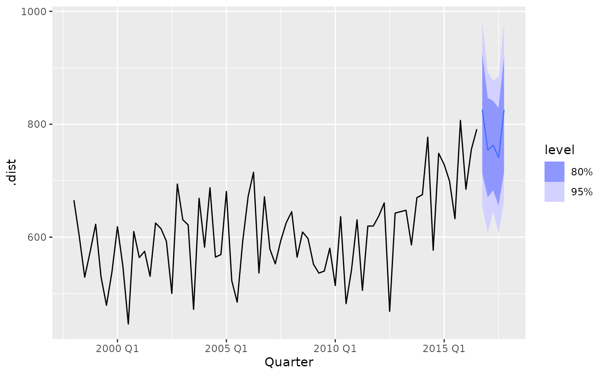

Convert ffc_gam forecasts to fable object
Usage
# S3 method for class 'ffc_gam'
as_fable(
x,
newdata,
forecasts = NULL,
response = NULL,
model = "ETS",
key_vars = NULL,
...
)Arguments
- x
An
ffc_gamobject used to generate forecasts- newdata
A
data.framecontaining the forecast data with the response variable- forecasts
Optional pre-computed forecasts from
forecast.ffc_gam(). If NULL, forecasts will be generated using the remaining arguments- response
Character string specifying the response variable name. If NULL, automatically detected from the model formula
- model
A character string representing the forecasting model to use if generating forecasts. Default is "ETS"
- key_vars
Optional character vector specifying grouping variables. If NULL, automatically detected from categorical variables in newdata
- ...
Additional arguments passed to
forecast.ffc_gam()if generating forecasts
Details
Converts forecasting output from ffc_gam xs into a properly
formatted fable x that can be used with fabletools functions like
autoplot(), accuracy(), and forecast combination methods
Examples
# \donttest{
# Basic usage with automatic detection
library(fable)
#> Loading required package: fabletools
library(tsibble)
#>
#> Attaching package: ‘tsibble’
#> The following objects are masked from ‘package:base’:
#>
#> intersect, setdiff, union
library(dplyr)
#>
#> Attaching package: ‘dplyr’
#> The following objects are masked from ‘package:stats’:
#>
#> filter, lag
#> The following objects are masked from ‘package:base’:
#>
#> intersect, setdiff, setequal, union
# Prepare tourism data
tourism_melb <- tourism |>
filter(Region == "Melbourne", Purpose == "Visiting") |>
mutate(quarter = as.numeric(format(Quarter, "%q")),
time = row_number())
# Split data
train <- tourism_melb |> slice_head(n = 75)
test <- tourism_melb |> slice_tail(n = 5)
# Fit model
mod <- ffc_gam(
Trips ~ fts(time, mean_only = TRUE, time_k = 50, time_m = 1) +
fts(quarter, k = 4, time_k = 15, time_m = 1),
time = "time", data = train, family = tw(), engine = "gam"
)
# Convert to fable with auto-detection
fc_fable <- as_fable(mod, newdata = test, model = "ETS")
# Use fabletools ecosystem
autoplot(fc_fable, train) # Forecast plot

accuracy(fc_fable, test) # Accuracy metrics
#> # A tibble: 1 × 13
#> .model Region State Purpose .type ME RMSE MAE MPE MAPE MASE RMSSE
#> <chr> <chr> <chr> <chr> <chr> <dbl> <dbl> <dbl> <dbl> <dbl> <dbl> <dbl>
#> 1 FFC_ETS Melbour… Vict… Visiti… Test 15.1 77.2 61.3 0.737 7.53 NaN NaN
#> # ℹ 1 more variable: ACF1 <dbl>
hilo(fc_fable, level = c(80, 95)) # Prediction intervals
#> # A tsibble: 5 x 12 [1Q]
#> # Key: Region, State, Purpose [1]
#> Quarter Region State Purpose Trips quarter time .dist .mean .model
#> <qtr> <chr> <chr> <chr> <dbl> <dbl> <int> <dist> <dbl> <chr>
#> 1 2016 Q4 Melbourne Victor… Visiti… 804. 4 76 sample[200] 808. FFC_E…
#> 2 2017 Q1 Melbourne Victor… Visiti… 734. 1 77 sample[200] 748. FFC_E…
#> 3 2017 Q2 Melbourne Victor… Visiti… 670. 2 78 sample[200] 767. FFC_E…
#> 4 2017 Q3 Melbourne Victor… Visiti… 824. 3 79 sample[200] 759. FFC_E…
#> 5 2017 Q4 Melbourne Victor… Visiti… 985. 4 80 sample[200] 859. FFC_E…
#> # ℹ 2 more variables: `80%` <hilo>, `95%` <hilo>
# Distribution summaries
fc_fable |>
summarise(
mean_forecast = mean(.dist),
q25 = quantile(.dist, 0.25),
q75 = quantile(.dist, 0.75)
)
#> # A tsibble: 5 x 4 [1Q]
#> Quarter mean_forecast q25 q75
#> <qtr> <dbl> <dbl> <dbl>
#> 1 2016 Q4 808. 752. 851.
#> 2 2017 Q1 748. 704. 787.
#> 3 2017 Q2 767. 722. 812.
#> 4 2017 Q3 759. 711. 797.
#> 5 2017 Q4 859. 797. 916.
# With pre-computed forecasts
forecasts <- forecast(mod, newdata = test, model = "ETS", summary = FALSE)
fc_fable2 <- as_fable(mod, newdata = test, forecasts = forecasts)
# With custom parameters
fc_fable3 <- as_fable(
mod,
newdata = test,
model = "ETS",
response = "Trips",
key_vars = c("Region", "State")
)
# }